This WW1 aeroplane miniatures dogfight was played at EdCon XI in January, 2004. We used the Red Baron rules set from the Emperor's Press. I'm not 100% happy with the rules (i.e. I feel the same way every miniatures player does when using rules that he didn't write himself) but the players seemed to enjoy it.
Our dogfight saw two Sopwith Camels and a Sopwith Snipe take on two Fokker D.VIIs and a Fokker Triplane. Since the Tripes were out of front-line service by summer 1918, and the Snipes didn't reach the front before Sept 1918, the historicity is a bit dodgy. But until I get a better way of packing the models for road-trips, these were the only ones I was willing to risk. The models are 1/72 scale: big enough to look pretty impressive, while still being relatively manageable.
The Allies were played by Sal Vasta, Pete Giancola, and myself. The Germans were Andy House, Tito Autrey, and Jim Pyle. Pete and I took the pictures. (Thanks again, Pete!)
(Click on the images for a better view)
Obviously there's not a lot of terrain in an aerial battle, so we set up on
opposite sides of the room, facing each other. Here Pete does some fine tuning prior to play. (That's
Sal with his back to us, and our host, Ed Beach, behind him.) The Snipe, piloted by Sal, is in the
middle, flanked by the two Camels. Each side had a few minutes before the battle for tactical planning.
We decided to circle left in hopes of concentrating our entire flight against a single enemy aircraft.
The Germans set up assymetrically, with the Triplane on their right (i.e. left in
the photo). Here's Andy and Jim writing down their first moves. When I gamemaster I like to be privy to
both sides' plans (omniscience adds to the fun) but as I was playing in the game I had to do without.
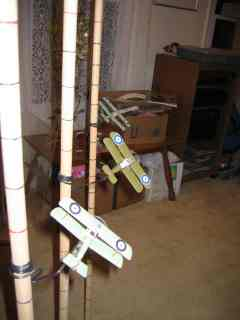
We began with a well-coordinated turn left.
It's probably worth pointing out that the Snipe is in approximately accurate colors,
but the green used on the Camels is a travesty. Those were the first two models that I built, and I didn't
have good references then for accurate colors. (Frankly, I still don't have too good an eye for color.)
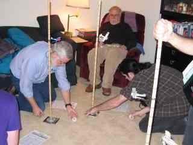
Amusingly, the Germans decided to swing to their left, too. At least the Fokkers (shown here) did. The Triplane went straight for us (as a decoy?), which was pretty much playing into the Allied hand.
The plumbing hardware at the bottom of the flight sticks wasn't very stable on Ed's rug. The players thought up the idea of using CD cases underneath, which was a great idea. You can see them in use here. The CDs with their corners made better reference points for moving than the round bases, too.
One of the really fun aspects of gamemastering for smart guys is that after a turn or
two the players are running things more quickly than I could by myself. Less administration work is great for
me because it frees up more time to play (and take pictures).
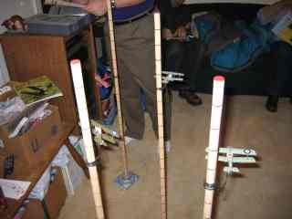
Unfortunately for us, our formation flying skills rapidly deteriorated in the excitement of battle.
Here you see the Triplane approaching as Pete shoots ahead of the formation and my Camel
is heading towards the center rather than the left.
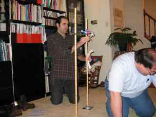
Still, Andy and Jim had swung their Fokkers out far enough (to the other side of the room)
that we weren't in too much danger. Or so I thought.
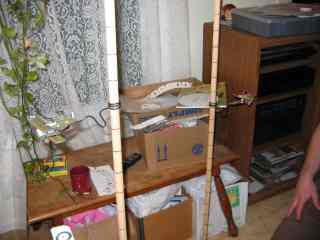
Tito and Sal were flying straight for each other. Wary of crashing, or perhaps just worried
that the other would get on the their, they both plotted an Immelmann for this turn, which left them tail to
tail. You can't shoot anybody down that way.
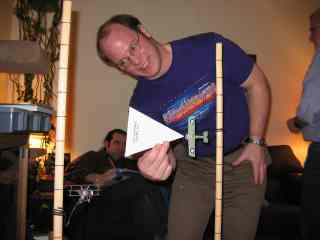
Meanwhile, Pete executed a hard left turn. With their rotary engines, Camels are much more agile turning right. But even against the gyroscopic force of the engine, they're still pretty nimble.
Tito (pilot of the Triplane) is smiling here because Pete was so close to getting a
decent shot . . . but not close enough, it turned out.
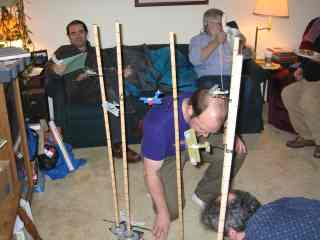
The following turn saw the Tripe and the Snipe doing another Immelman to get back into the
battle. Pete's Camel overshot the dogfight a bit. Jim's Fokker turned to pursue the Snipe and flew into my guns.
I inflicted maybe a wing hit or two and managed to jam one of my guns. Meanwhile, Andy was manuevering onto
my tail (off to the right of the photo), though too far away to fire.
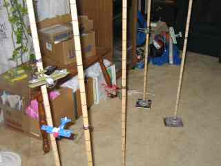
The dogfight now broke off into two parts. Pete and I tried to bring our Camels around to
get back into the fight, with Andy moving in on us. Meanwhile, Sal, Jim, and Tito were furiously maneuvering to
get the enemy in front of their guns.
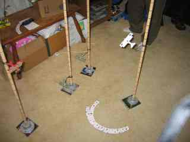
Unfortunately for us, I didn't allow enough clearance, and I crashed into Pete. (Nevermind the enemy, watch out for the idiot on your own side.) Andy finally caught up to us in time to watch us fall. I was a goner immediately; Pete survived one turn from the resulting fire but a lousy damage dieroll on the following turn was his coup-de-grace.
As the enemy at the scene of the disaster, Andy put us both in as victory claims.
I thought it was bogus (albeit funny) at the time, but since then I've read of several account where this
actually happened. Sorry, Andy, I shouldn't have doubted you. (Besides, Andy's Fokker is decked out in
Hermann Goering's colors, and it's historically accurate for HG to make spurious claims.)
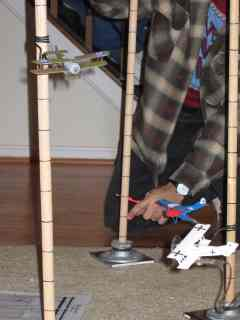
So now Sal was on his own, one against three. He was definitely not a happy camper. Lucky for me, he needed me for a ride home, so he had to be polite. :^)
Since gunfire had so far been ineffective, Sal tried maneuvering between the enemy
aircraft, hoping that he could get two (or all three) to crash together and even out the odds again.
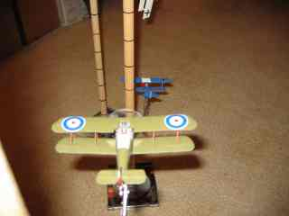
He didn't succeed, but it wasn't through lack of trying. The four aeroplanes were making quite the furball. Sal finally succeeded in getting Jim in his sights, but inflicted no more than minor damage due to bad dierolls.
At that point it was getting late, so we called it a night. We got through eleven
turns.
I think everyone had a good time (until I ran into Pete, anyway) but we agreed that gunfire was way too ineffective to be interesting. The Red Baron rules are really designed for smaller scale aircraft (1:144 or 1:285) and so I had just doubled the turning circles and movement distances for the 1:72 models used here. But the -10 on the percentile dice per 2" of range made it practically impossible to damage anyone. If we play these rules next year, we'll go with -10 per 4" of range instead.
There were a couple of other problems that I had with the system. First, plotting and executing maneuvers takes an awful long time. Something faster would be nice just from a game-session standpoint. Also, the amount of realism that we're getting for the detail is pretty limited; my beef here is primarily with the altitude rules, since the aeroplanes perform identically within their altitude range. Not so in real life.
On the balance, I think that I'd prefer to use a simpler rules set like Blue Max or Canvas Eagles next time. It'd be fun to run several dogfights instead of just one. Campaign, anyone?
{kind=link}
{kind=link}
{kind=link}
{kind=link}
{kind=link}
{kind=link}
{kind=link}
{kind=link}
{kind=link}
{kind=link}
{kind=link}
{kind=link}
{kind=link}